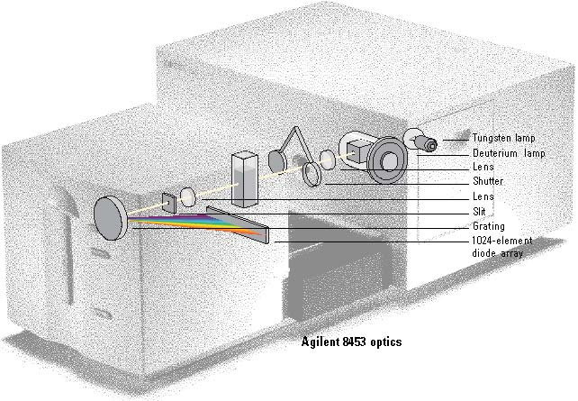
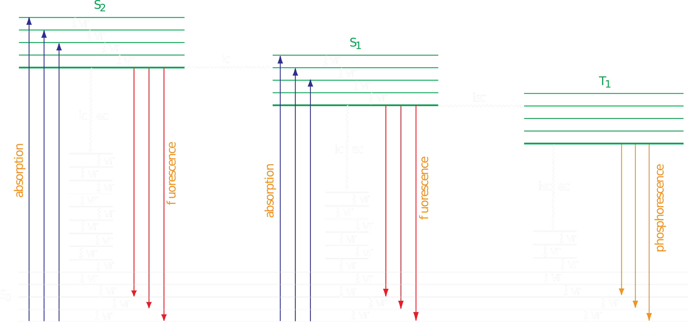
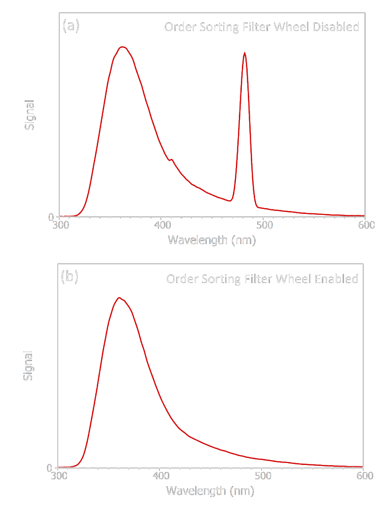
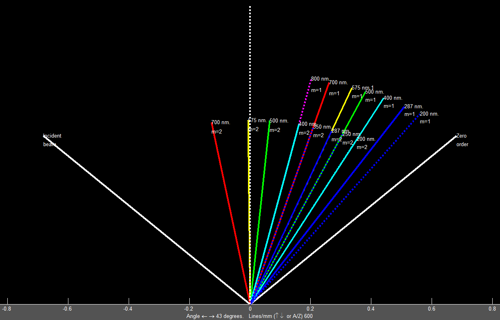
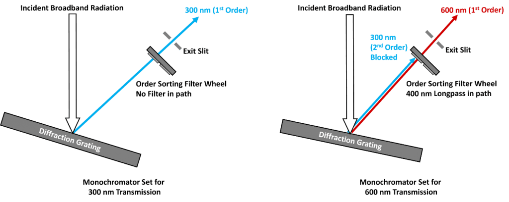

layout: true --- <h2 style = "text-align: right; font-weight: bold;">8.1.1</h2> <h1 style = "text-align: left; font-weight: bold; margin-left: 40px;">UV-vis Instrumentation</h1> <h3 style = "text-align: left; font-weight: bold; margin-left: 40px;">UV-vis Optomechanics</h3> <h5 style = "text-align: left; font-weight: bold; margin-left: 40px;">Granger 6.4</h5> --- class: center We have an Agilent 8453 Diode Array UV-vis  .image-credit[[Agilent Technologies](https://www.agilent.com/cs/library/eseminars/public/Using_a_Diode_Array_in_Regulated_Environments.pdf) / Fair Use] --- class: center <div style="margin-top: 200px;"></div> We also have a [Agilent Cary 5000](https://www.agilent.com/cs/library/posters/public/si-0157.pdf) UV-vis-NIR --- <h2 style = "text-align: right; font-weight: bold;">8.1.2</h2> <h1 style = "text-align: left; font-weight: bold; margin-left: 40px;">UV-vis Instrumentation</h1> <h3 style = "text-align: left; font-weight: bold; margin-left: 40px;">Component Selection</h3> <h5 style = "text-align: left; font-weight: bold; margin-left: 40px;">Granger 6.5-6.7</h5> --- <h2 style = "text-align: right; font-weight: bold;">8.2.1</h2> <h1 style = "text-align: left; font-weight: bold; margin-left: 40px;">Luminescence Spectroscopy</h1> <h3 style = "text-align: left; font-weight: bold; margin-left: 40px;">Theory</h3> <h5 style = "text-align: left; font-weight: bold; margin-left: 40px;">Granger p 244-247</h5> --- class: center <div style="margin-top: 200px;"></div> We will consider two types of luminescence spectroscopy: phosphorescence and fluorescence. --- class: center <div style="margin-top: 200px;"></div> Luminescence is very *sensitive* (fM) but not all molecules luminesce. -- ...this can make it very *selective*. --- class: center Fluorescence is light emission from an excited singlet state (ns to ms).  .image-credit[David Harvey / [Analytical Chemistry 2.1](https://chem.libretexts.org/Bookshelves/Analytical_Chemistry/Book%3A_Analytical_Chemistry_2.1_%28Harvey%29) / [CC BY-SA 4.0](https://creativecommons.org/licenses/by-sa/3.0/at/deed.en)] --- class: center Phosphorescence is light emission from an excited triplet state (ms to ks). .image-credit[David Harvey / [Analytical Chemistry 2.1](https://chem.libretexts.org/Bookshelves/Analytical_Chemistry/Book%3A_Analytical_Chemistry_2.1_%28Harvey%29) / [CC BY-SA 4.0](https://creativecommons.org/licenses/by-sa/3.0/at/deed.en)] --- class: center A triplet state is spin forbidden ($M = 2S + 1$).  .image-credit[David Harvey / [Analytical Chemistry 2.1](https://chem.libretexts.org/Bookshelves/Analytical_Chemistry/Book%3A_Analytical_Chemistry_2.1_%28Harvey%29) / [CC BY-SA 4.0](https://creativecommons.org/licenses/by-sa/3.0/at/deed.en)] --- <h2 style = "text-align: right; font-weight: bold;">8.2.2</h2> <h1 style = "text-align: left; font-weight: bold; margin-left: 40px;">Luminescence Spectroscopy</h1> <h3 style = "text-align: left; font-weight: bold; margin-left: 40px;">Instrumentation</h3> <h5 style = "text-align: left; font-weight: bold; margin-left: 40px;">Granger 8.3</h5> --- class: center Second order diffraction is an interference in fluorescence spectroscopy.  .image-credit[[Einburgh Instruments](https://www.edinst.com/blog/second-order-diffraction/) / Fair Use] --- class: center Second order diffraction originates from monochrometer and scattering by colloidal samples.  .image-credit[Tom O'Haver / [terpconnect.umd.edu](https://terpconnect.umd.edu/~toh/models/matlab/DiffractionGrating.htm) / Fair Use] --- class: center An absorbing filter is used to block second order diffraction.  .image-credit[[Einburgh Instruments](https://www.edinst.com/blog/second-order-diffraction/) / Fair Use] <!-- --- <h2 style = "text-align: right; font-weight: bold;">8.R</h2> <h1 style = "text-align: left; font-weight: bold; margin-left: 40px;">Spectroscopy and UV-vis Review</h1> <h3 style = "text-align: left; font-weight: bold; margin-left: 40px;"></h3> <h5 style = "text-align: left; font-weight: bold; margin-left: 40px;">Granger 6.1-6.7</h5> --> <!-- =============================================================================== -->